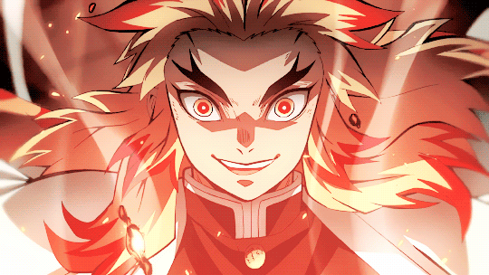

Kyojuro Rengoku <煉獄 杏寿郎>
Here is something you can know about Kyojuro Rengoku

Name: Kyojuro Rengoku
Type: The Flame Hashira
Kyojuro Rengoku(煉獄 杏寿郎) is a major supporting character of
Demon Slayer: Kimetsu no Yaiba and a major character in the Mugen Train
Arc. He is a Demon Slayer of the Demon Slayer Corps and the former
Flame Hashira(炎柱) Oops! Spolier Alert.....
Kyojuro's very distant ancestor, as stated by Kyojuro, ate a lot of tempuras causing their descendants' and their own hair to become quite abnormal.
Appearence

Kyojuro is a young adult of tall stature and athletic build. He
has long bright yellow hair with red streaks with two shoulder-length
bangs and two chin-length bangs on the side of his head, black forked
eyebrows, and golden eyes that fade to red with white pupils.Kyojuro wears
a paler brown version of the regular Demon Slayer uniform, which consists
of a brown gakuran jacket, a white belt around his waist and hakama pants.
Over this, he wears a haori with a white-yellow gradient pattern and red
flame-like ridges at the end that his father Shinjuro once worn and more
than likely his father worn when they were the Flame Hashira respectively.
Finally, he wears red tabi socks with yellow flames erupting from the
bottom-up, with a pair of white zōri with red straps.
Personality
Kyojuro is greatly enthusiastic guy in regard to his duties as a Hashira, and often came across as cheerfully eccentric. He is amiable, pure of heart and boasted extraordinary technique and swordsmanship stemming from strict practice and discipline. He is an honorable warrior who adhered to his code of morals and principles that was instilled into him by his mother at a young age—the most significant being his belief that those who were born strong have a duty to protect the weak.